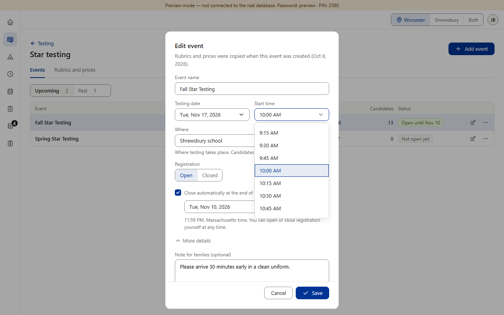
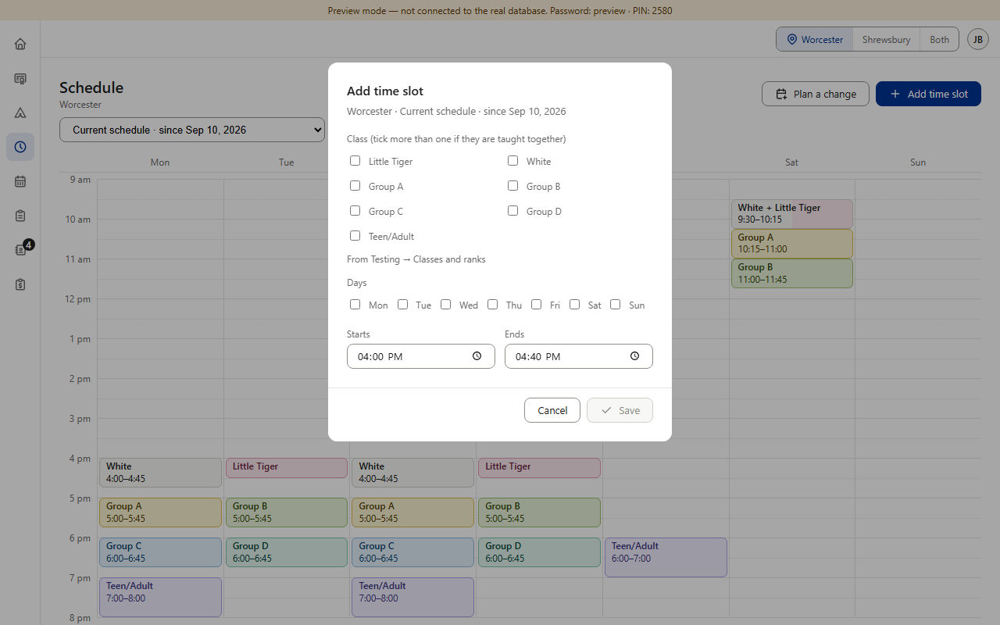
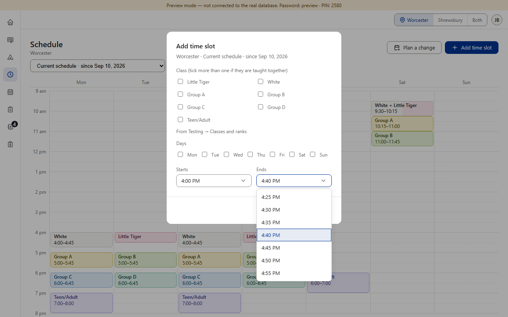

Today



Calendar uses the same browser time box as Schedule when “All day” is off.
Proposed (option B) · one time list everywhere

Copies what's already there: Star's own list (it already opens at the chosen time) with Color Belt's 5-minute steps. The range fits the job: 6:00 AM–10:00 PM for classes, testing and camps; Finance's reminder keeps 11 AM–11 PM and “Off”. Picture 4 is drawn over the real Add time slot box; nothing in the app was changed.